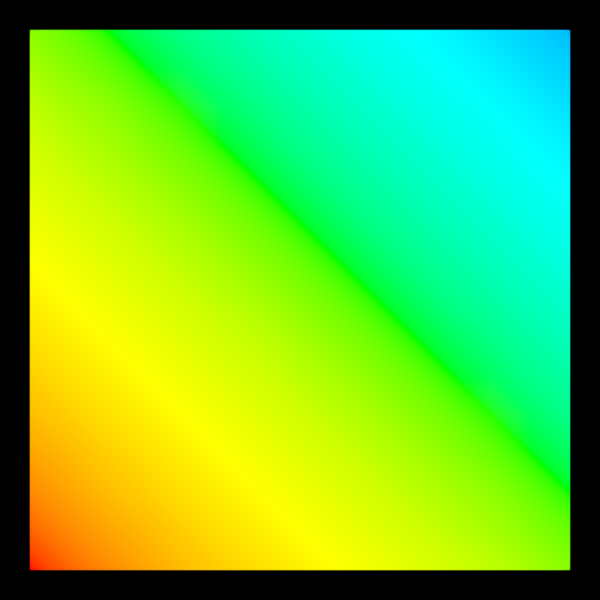

Basic Mesh#
Interactive mesh example demonstrating ColorModel subclasses.
This example shows: - Per-vertex coloring with VertexColors (gradient based on position) - Uniform coloring with UniformColor (solid purple) - Interactive face removal on mouse hover - Cycling between color models with right-click - Mesh reset on left-click
The mesh starts with per-vertex colors creating a colorful gradient. Right-clicking toggles between per-vertex and uniform coloring modes.

import cmap
import numpy as np
import scenex as snx
from scenex.app.events import (
Event,
MouseButton,
MouseMoveEvent,
MousePressEvent,
)
# Create a more complex mesh - a grid of vertices
def create_grid_mesh(
size: int = 10, spacing: float = 0.2
) -> tuple[np.ndarray, np.ndarray]:
"""Create a grid mesh with given size and spacing."""
vertices = []
faces = []
# Create vertices in a grid
for i in range(size):
for j in range(size):
x = i * spacing
y = j * spacing
z = 0.0
vertices.append([x, y, z])
# Create triangular faces
for i in range(size - 1):
for j in range(size - 1):
# Current vertex indices
v0 = i * size + j
v1 = i * size + (j + 1)
v2 = (i + 1) * size + j
v3 = (i + 1) * size + (j + 1)
# Two triangles per grid square
faces.append([v0, v1, v2])
faces.append([v1, v3, v2])
return np.array(vertices), np.array(faces)
# Create the mesh
original_vertices, original_faces = create_grid_mesh(size=15, spacing=0.15)
# Create per-vertex colors (gradient based on position)
per_vertex_model = snx.VertexColors(
color=[
cmap.Color(f"hsl({int(v[0] * 50 + v[1] * 50) % 360}, 100%, 50%)")
for v in original_vertices
],
)
# Create uniform colors
uniform_model = snx.UniformColor(color=cmap.Color("purple"))
mesh = snx.Mesh(
vertices=original_vertices,
faces=original_faces,
color=per_vertex_model,
)
view = snx.View(
scene=snx.Scene(children=[mesh]),
camera=snx.Camera(controller=snx.PanZoom(), interactive=True),
)
def event_filter(event: Event) -> bool:
"""Interactive mesh manipulation based on mouse events."""
if isinstance(event, MouseMoveEvent):
if not (ray := view.to_ray(event.pos)):
return False
if ray.intersections(mesh):
# Remove the intersected face
indices = [i for i, _d in mesh.intersecting_faces(ray)]
mesh.faces = np.delete(mesh.faces, indices, axis=0)
return True
elif isinstance(event, MousePressEvent):
if event.buttons & MouseButton.LEFT:
# Reset the mesh on click
mesh.vertices = original_vertices.copy()
mesh.faces = original_faces.copy()
return True
elif event.buttons & MouseButton.RIGHT:
# Right click cycles the colormodel
if mesh.color == uniform_model:
mesh.color = per_vertex_model
else:
mesh.color = uniform_model
return False
# Set up the event filter
view.set_event_filter(event_filter)
# Show and position camera
snx.show(view)
print("Interactive Mesh Demo:")
print("- Move mouse over mesh to delete intersected faces")
print("- Left click to reset all faces")
print("- Right click to cycle color models")
print("- Use mouse to pan/zoom the camera")
snx.run()